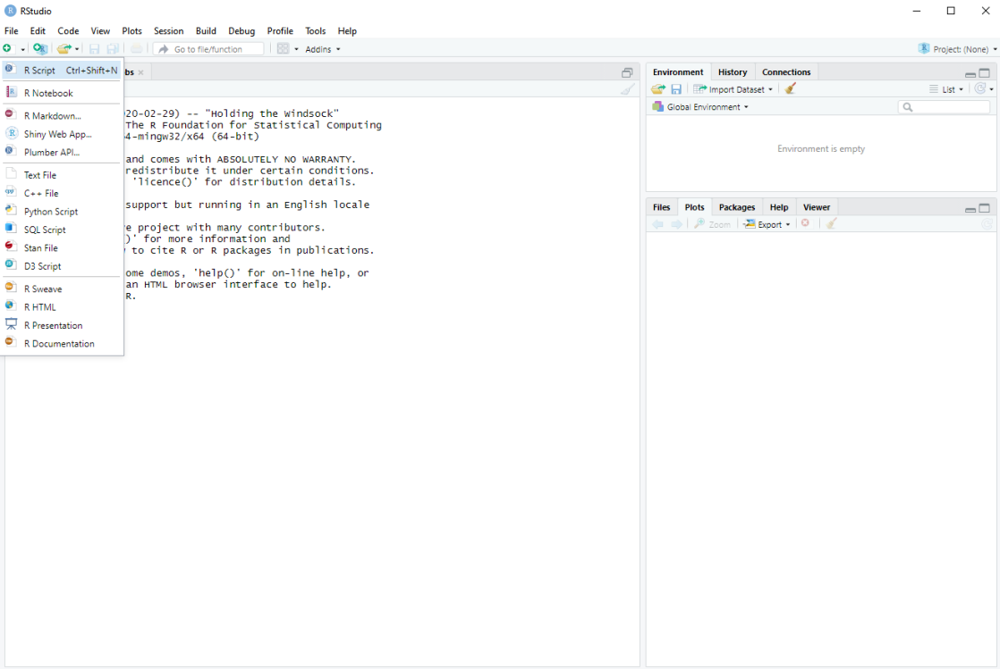

2 + 21 Introducción a R
1.1 Instalando y R Studio
R Studio es un entorno de desarrollo integrado (IDE por sus siglas en inglés), con varias herramientas que permiten utilizar los lenguajes de programación R y python, ambas utilizadas ampliamente en la ciencia de datos. Este software provee una interfaz intuitiva que permite un manejo fácil y amigable de cualquier tipo de datos. Tanto R como R Studio son de código abierto y pueden descargarse gratuitamente.
Actualmente, existen dos alternativas para utilizar R Studio. Este puede instalarse localmente en un computador, o puedes utilizarlo en la web a través de Posit Cloud. Esta última opción es muy útil si tu computador no cuenta con suficiente memoria RAM. Crear una cuenta en Posit cloud es gratis y puedes crear hasta 25 proyectos. Para hacerlo solamente sigue este enlace, haz clic en Sign up, y sigue las instrucciones.
Una vez hayas creado tu cuenta, verás una ventana como la siguiente y puedes crear un nuevo proyecto:
Por el contrario, si quieres tener R y R Studio en tu computador debes contar con acceso a internet y cualquier navegador web de tu preferencia, Chrome, Firefox, etc. Si tu Sistema Operativo es Windows la descarga de R debe hacerse desde el subdirectorio base en la web de CRAN (Comprehensive R Archive Network), aquí. De la misma manera, R Studio para Windows puede ser descargado desde aquí. Si surge algún problema durante la instalación o quieres saber más sobre R, puedes dirigirte a la sección de Preguntas frecuentes.
Si tienes otro Sistema Operativo o tienes un nivel medio o avanzado en el uso de R, te recomiendo leer este tutorial de instalación.
1.2 !Ya has instalado R Studio! ¿Y ahora qué?
Una vez que abras R Studio notarás muchas opciones, paneles y una consola. Todo esto puede parecer confuso al principio pero ahora te familiarizarás rápidamente con esta interfaz.
La barra de herramientas en la parte superior contiene las opciones File, Edit, Code, View, etc. Debajo de File puedes encontrar un icono similar a este . Una vez hagas clic en este, podrás ver una amplia lista de documentos que puedes crear, entre ellos R Script. Este es el tipo de documento que utilizaremos para escribir nuestros códigos.
Note
También puedes crear un nuevo script presionando Ctrl+Shift+N.

Una vez que hayas creado un nuevo script, R Studio lucirá de la siguiente manera:

Ahora puedes observar 4 paneles con varias opciones dentro de cada uno.
- Source es el panel en el que puedes crear y editar scripts.
- Environment almacena los objetos creados a lo largo del trabajo por tu script.
- El panel que contiene a las pestañas Files, Plots, Packages, Help y Viewer, te permetirá encontrar de manera rápida y eficiente los archivos en tu directorio de trabajo (Files), los gráficos generados (Plots), los paquetes instalados (Packages), manuales de ayuda de funciones y de paquetes instalados (Help), y por último a Viewer, un panel que muestra gráficos interactivos generados por algunos paquetes.
- En Console encontrarás el signo
>llamado prompt que muestra si el sistema está listo o no para ejecutar un comando. Además, los resultados de los análisis se mostrarán aquí.
1.3 ¿Qué es un script?
Un script comprende una serie de comandos escritos en un archivo de texto que pueden ser almacenados, editados y ejecutados. ¿Suena sencillo? Efectivamente es un concepto simple y tiene muchas ventajas si se lo compara con programas que no cuentan con esta opción. Un script nos brinda la posibilidad de editar cualquier línea de comando las veces que sea necesario, te permite retomar cualquier trabajo tras varios días, meses o años. Además puedes agregar comentarios sobre el código que escribes como verás a continuación. Esto resulta extremadamente útil si quieres compartir tu trabajo con otros, o si te encuentras trabajando en un proyecto extenso, el cual podrás retomar exactamente desde donde lo dejaste.
Ahora que conoces un poco más sobre esta interfaz, ¡ya puedes empezar!
1.4 Primeros pasos
Empecemos escribiendo operaciones matemáticas sencillas en el script.
Ahora presiona Enter, ¿qué sucede? Es importante saber que la ejecución de comandos con la tecla Enter se lleva a cabo solamente en la Consola. Si quieres ejecutar un código dentro del script, debes apretar Ctrl+Enter.
Ahora escribe la misma operación precedida por un signo numeral # y presiona Ctrl+Enter.
# 2 + 2¿Hay algún resultado? Si colocamos este símbolo al iniciar una línea, esta no será leída como un código, por lo que no se ejecutará. Esto es muy útil al momento de agregar comentarios sobre el código que escribimos y para poder compartirlo con otros y así entiendan rápidamente que realizaste en tu trabajo.
Sigamos intentando con más operaciones matemáticas.
# División
8/2
# Multiplicación y suma
2*2+7
2*(2+7) #¿Este resultado es diferente?
# Potenciación
3^3
# Potencia negativa
3^-3
# También puedes ejecutar varias operaciones sobre una misma línea
3*10 ; 15/45 ; 15-37Compliquemos esto aplicando otras funciones matemáticas.
# Logaritmo
log(5)
# Logaritmo natural y base 10 con otras operaciones
log(5)/log2(5*3)
# Raiz cuadrada
sqrt(23.567)
# Factorial
factorial(24)Nota que los números ahora se encuentran dentro de un paréntesis y delante de una función. Existen probablemente millones de funciones en R con propósitos diferentes y específicos. Para poder ejecutarlas, éstas deben estar escritas con la estructura que viste en el ejemplo anterior función( ... ). Tú también puedes crear tus propias funciones, pero eso lo dejaremos para un curso más avanzado.
Como lo notaste, todos los resultados de estas operaciones se muestran en la Consola. Sin embargo, si quisieras almacenarlos y manipularlos posteriormente es necesario transformarlos en objetos. Para ello debemos hablar sobre la estructura de datos.
1.5 Estructura de datos
R contiene una jerarquía de elementos y provee varios tipos de estructuras de datos especializadas a las que se les conoce como objetos. Para los propósitos de este curso mencionaremos a los vectores y matrices pero nos enfocaremos en los data frames. Sin embargo, es importante saber que existen otros tipos de estructuras de datos como las listas, que utilizaremos ampliamente en el nivel avanzado de este curso.
1.5.1 Vectores
Un vector es una secuencia de datos del mismo tipo ya sean numéricos o de carácter. Así, para construir vectores numéricos, deberemos primeramente nombrar a nuestro objeto y asignarle valores mediante <-. Supongamos que quieres almacenar los resultados de las operaciones anteriores en un objeto “x” e “y”.
x <- log(5)
y <- log(5)/log2(5*3)Observa que en el panel Environment ahora hay dos objetos que corresponden a los vectores numéricos que creaste con los resultados de cada operación. De esta manera, ahora será más fácil manipular estos datos.
# Ejecuta lo siguiente
x*y
# Almacena el resultado de ambos objetos en un vector nuevo
z <- x*y
# Puedes imprimir el resultado en la consola
zAhora crea una secuencia de números dentro de un vector. Una forma rápida de crear este tipo de vectores es mediante la función seq.
# Puedes crear números sucesivos del 1 - 10
a <- c(1:10)
# O una secuencia hasta el 15 con un intervalo de 3
b <- seq(1, 15, 3)La función seq crea secuencias en este caso del número 1 hasta el 15, con un intervalo de 3. Pero, ¿cómo podrías saber qué significa cada argumento dentro de una función si no la conoces?
Existen dos maneras de indagar sobre una función cualquiera y obtener ayuda sobre la misma:
?seq
help(seq)La sección de ayuda contiene todo lo que debes saber sobre cualquier función. Al final de cada manual de instrucciones de la función podrás ver además ejemplos que te ayudarán a entenderla y aplicarla según tus necesidades.
Ahora bien, puedes aplicar esto a un ejemplo más cotidiano. Imagina que posees datos de distintos pesos de varios individuos de una especie de roedor que has capturado y quieres realizar algunas operaciones con ellos. Almacena estos pesos dentro de un vector utilizando la función concatenar c().
pesos <- c(25, 27, 30, 20, 26, 27.5, 23, 30.8)Ahora que tienes estos datos almacenados en un vector, puedes realizar operaciones con ellos.
# Número de observaciones
length(pesos)
# Valores minimos y maximos
min(pesos)
max(pesos)
# Promedio
mean(pesos)Para hacer este ejemplo aún más real, imagina que las medidas tomadas eran erróneas o ya no sirven para su estudio. Puedes entonces modificar el vector de la siguiente manera:
# Elimina el cuarto valor en nuestro vector
pesos_mod <- pesos[-4]
# Remueve desde el primer hasta el quinto valor
pesos_mod <- pesos[-1:-5]
# Agrega más valores al vector
pesos_mod <- c(pesos, 21, 28.3, 31, 26.5)Cuando modificas un vector es usualmente aconsejable crear uno nuevo y almacenar la nueva información en éste. El código no siempre se verá tan sencillo como en el ejemplo anterior y es mejor trabajar de una manera segura al manipular metadatos.
Es muy útil saber que si deseas eliminar cualquier objeto, lo puedes hacer en cualquier momento mediante la función remove() o rm().
1.5.2 Matrices
Una matriz no es más que un conjunto de datos del mismo tipo organizado de forma bidimensional, es decir, en filas y columnas. Crear y modificar matrices tiene también un proceso parecido al de los vectores.
matriz <- matrix(1:14, ncol=7)
matriz
Ejercicio
Organiza diferentes matrices con diferentes números de columnas y filas, usa help(matrix) para saber como hacerlo. ¿Qué sucede si organizas la matriz mediante matrix(2:14, ncol=3)?:
Este método solo crea matrices con datos secuenciales, entonces ¿cómo podrías organizar distintos pesos de roedores de forma bidimensional? Siguiendo con el ejemplo de los roedores, supongamos que tienes dos especies de roedores.
roedor1 <- c(25, 27, 30, 20, 26, 27.5, 23, 30.8)
roedor2 <- c(26, 26.5, 30, 20, 31, 27.5, 28, 20.8)
# Lee sobre cbind usando help()
roedores <- cbind(roedor1, roedor2)
# Ahora utiliza rbind() para unir ambos vectores. ¿Cuál es la diferencia?Al igual que los vectores, las matrices también pueden ser modificadas. Sin embargo, al haber añadido una dimensión más, la forma de editarlas cambia dependiendo de si quieres modificar una fila o una columna.
# Elimina la cuarta fila
roedores_mod <- roedores[-4,]
# Elimina la 1ra, 2da y 7ma fila
roedores_mod <- roedores[c(-1,-2,-7),]
# Ahora intenta esto
roedores_mod <- roedores[,-1]
# ¿Qué pasó luego de ejecutar este código?
# Observa la posición de la coma
Ejercicio
Añade dos nuevas columnas a la matriz roedores y posteriormente elimina los datos desde la 2da hasta la 4ta fila.
También puedes usar distintas funciones para analizar cualquier matriz. Puedes leer mas sobre estas funciones en la sección de ayuda.
head(roedores)
nrow(roedores)
class(roedores)1.5.3 Data frames
Un data frame es un set de datos que puede estar conformado por valores numéricos y caracteres. Trabajar con este tipo de objetos es una aproximación más realista a lo que ecncontrarás cotidianamente como verás a lo largo de este curso.
Continuando con el ejemplo de los roedores, agrega una columna que contenga un vector de caracteres y asigna el nombre de especie a cada roedor. Para este propósito puedes organizar los datos de pesos de los roedores en filas.
# Añade varias veces los objetos creados anteriormente
roedores <- cbind(roedor1, roedor2, roedor1, roedor2)
class(roedores)
## [1] "matrix" "array"El objeto roedores es aún una matriz, ¿cómo podrías añadir las localidades para convertirlo en un data frame?
#Crea un vector de caracteres
localidad <- c("Quito", "Guayaquil")
# Utiliza la función data.frame
roedores <- data.frame(roedores, localidad)
# Analiza el data frame
class(roedores)
summary(roedores)
str(roedores)La función summary y str brindan información relevante que te permite tener una vista rápida para entender la organización de tus datos. Sin embargo, ¿cómo podrías saber algo más específico como cuántos valores por debajo de 25 existen en el data frame?
roedores <= 25
## roedor1 roedor2 roedor1.1 roedor2.1 localidad
## [1,] TRUE FALSE TRUE FALSE FALSE
## [2,] FALSE FALSE FALSE FALSE FALSE
## [3,] FALSE FALSE FALSE FALSE FALSE
## [4,] TRUE TRUE TRUE TRUE FALSE
## [5,] FALSE FALSE FALSE FALSE FALSE
## [6,] FALSE FALSE FALSE FALSE FALSE
## [7,] TRUE FALSE TRUE FALSE FALSE
## [8,] FALSE TRUE FALSE TRUE FALSEEjecutar este código nos devuelve valores lógicos o también llamados booleanos como resultado. Cada TRUE o FALSE puede ser contado individualmente, pero ¿cómo lograrías contarlos automáticamente?
sum(roedores<= 25)
#Ahora utiliza la función which(), ¿cuál es la diferencia?También puedes elegir columnas individuales y realizar el mismo procedimiento. El signo $ señala cual es la columna de la cual quieres tomar los datos.
roedores$roedor1 > 25La manipulación de esta clase de objetos será ampliada y tratada con más detenimiento en la siguiente clase.
2 Paquetes
El hecho de que R sea un software de código abierto permite que cualquier persona puede crear sus propias líneas de código y funciones para resolver determinados problemas o automatizar procesos.
Existen un gran número de paquetes que pueden ser descargados gratuitamente desde el repositorio central de paquetes de R, CRAN. Sin embargo, CRAN no es el único repositorio que existe y aunque en este curso este es el único que ocuparemos, es necesario nombrar a Bioconductor y Github como otros de los más usados. Cada uno cuenta con su manera de descarga e instalación de paquetes.
Volviendo a CRAN, para descargar un paquete solamente necesitamos ejecutar el comando install.packages("nombre_del_paquete"). El nombre del paquete debe ser reemplazado dentro de los paréntesis y entre comillas, de la siguiente manera:
# Instala el paquete dplyr
install.packages("dplyr")Una vez descargado, este ya se encuentra almacenado en tu computadora, en la dirección que indica la consola. Ahora, para poder usarlo solamente debes activarlo mediante:
library(dplyr)Los paquetes también cuentan con una sección de ayuda, a la cual puedes acceder mediante este código:
help(package= "dplyr")Ahora que ya sabes descargar paquetes, descarga ggplot2, un paquete de visualización de datos extremadamente popular y útil que utilizarás ampliamente en próximos capítulos.
2.1 tidyverse
tidyverse es una colección de paquetes que contiene a dplyr y ggplot2. Estos han sido creados para facilitar la manipulación y visualización de datos mediante gráficos estéticos con varias opciones para modificarlos y presentarlos. Puedes ver algunos ejemplos en la galería oficial de ggplot2, y varios ejemplos sobre las extensiones que han sido escritas para ampliar aún más el funcionamiento de este paquete.
Una vez hayas activado dplyr, ya puedes utilizarlo para buscar datos específicos en el data frame “roedores” utilizando una sintaxis diferente a la que aprendiste recientemente.
library(dplyr)
# Filtra por localidad
filter(roedores, localidad == "Quito")
# Almacena los resultados en un objeto nuevo llamado capital
capital <- filter(roedores, localidad == "Quito")
capital <- select(capital, roedor2)
Tarea
Utiliza todo lo aprendido en esta clase y el set de datos roedores y responde: ¿cuántos individuos de Guayaquil tienen pesos menores o iguales a 26.5?
2.2 ggplot2
Ahora que cuentas con un data frame, puedes visualizar los datos de una manera estética y comprensible. Por ahora, aprenderás a utilizar algunasfunciones de este paquete, sin un fin específico, y más adelante te concentrarás en ponerlo en uso con un objetivo de comunicación científica. Activa el paquete ggplot2 y ejecuta:
ggplot(data = roedores) +
geom_point(aes(x = roedor1, y = roedor2),
size = 5)
Ahora colorea cada punto en base a la localidad de muestreo.
Tarea
Utiliza el manual de ayuda de geom_point() o haz una búsqueda en internet para descifrar como elaboré este gráfico.
3 Nota
Como en cualquier actividad o disciplina, el manejo de R requiere constancia, disciplina y paciencia. Ten en cuenta que los ejemplos de este curso están planeados para que funcionen inmediatamente y sin errores, sin embargo, esto jamás va a ser la norma cuando analices tu propio set de datos debido a múltiples factores. Ten en cuenta que muchas veces las respuestas a los inconvenientes que encuentres podrás resolverlos en varios sitios web, e incluso con la ayuda Inteligencia Artificial (IA). Aunque, si eres nuevo en el mundo de la programación, no recomiendo que utilices IA para resolver tus problemas, ya que el autoaprendizaje y la prueba y error son sumamente importantes cuando se empieza a conocer un lenguaje de programación.
4 Fuentes
Este capítulo está influenciado por la clase “Introducción Básica al Lenguaje de R” de Juan Pablo Zurano, así como también: YaRrr, The R Book, y R for Data Science.